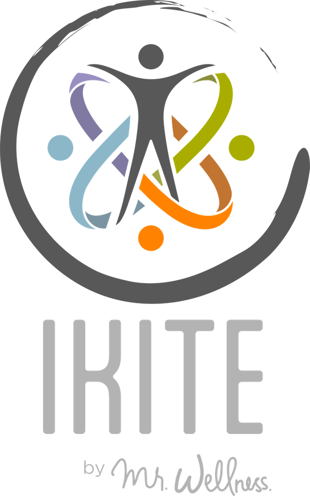

Tu bienestar completo en una sola app
- Comida mexicana de verdad, con foto, voz o código de barras
- Entrenamiento, descanso y calma en el mismo lugar
- Tus datos son tuyos y te los puedes llevar
Hecha en México · Funciona sin señal · Hoy en Android

Cuatro apartados, una sola app
-
Nutrir
Comida de aquí por foto, voz o código; sin señal en el súper.
Ya está -
Fortalecer
Sesiones armadas para ti, tu máximo (1RM), otros deportes y rehabilitación.
En construcción -
Recuperar
Tu sueño y tu descanso, con una rutina para dormir.
En pruebas -
Serenar
Más de cien prácticas de respiración y calma, con música y sonidos.
En pruebas
Lo que está en pruebas o en construcción va marcado. No le ponemos fecha hasta tenerlo.
Cuatro cosas que la distinguen
- Calorías que se corrigen con tus datos Se ajustan a lo que comes y a cómo se mueve tu peso, no a una fórmula.
- Comida mexicana de verdad Platillos calculados uno por uno, con tlacoyos, zacahuil y guisados de fonda.
- Funciona sin señal Registras en el camión o en el mercado; cuando hay internet, sube solo.
- Tus datos son tuyos Nadie los ve sin tu permiso y te los puedes llevar cuando quieras.
Lo que comes, cuánto pesas y cuánto mides son datos sensibles de salud. Lee el aviso de privacidad.
Dos planes y 1 mes gratis
Pruebas un mes sin pagar. Cancelas cuando quieras. Precios finales en pesos mexicanos, con IVA incluido.
Paso 1
Ikite
$115MXN / mes
$599MXN / año
Pagas mes con mes.
Equivale a $50 al mes: ahorras 57%.
- Nutrir: foto, voz y código de barras
- Peso, medidas y composición
- Recuperar y Serenar
Paso 2
Ikite con entrenamiento
$199MXN / mes
$1,199MXN / año
Pagas mes con mes.
Equivale a $100 al mes: ahorras 50%.
- Todo lo del Paso 1
- Fortalecer: sesiones armadas para ti
- Rehabilitación y programas de Carlos
Letra chica del mes gratis
En el mes gratis, la lectura con IA es de 1 foto, 1 nota de voz y 1 lectura de etiqueta al día; con tu plan, hasta 3, 3 y 5. Los códigos de barras no cuentan. No se cobra hasta que termine el mes. Después el plan se renueva solo (cada mes o cada año) y lo cancelas cuando quieras desde tu tienda; el cobro lo hace la tienda y Ikite nunca ve tu tarjeta. Los precios incluyen IVA. Lee los términos y condiciones.
La app es el primer paso, no el único
-
Paso 1: Ikite
$115 al mes o $599 al año
Ver detalle
Registras lo que comes, escaneas en el súper aunque no haya señal y ves tu peso real separado del que brinca. Tus calorías salen de tu propio gasto medido. Incluye el plan de la semana con lista del mandado, descanso y calma.
-
Paso 2: Con entrenamiento
$199 al mes o $1,199 al año
Ver detalle
La app arma tus sesiones de fuerza, cardio y más, según el tiempo y el equipo que tengas. Suma rehabilitación y los programas de Carlos.
-
Paso 3: Con tu profesional de la salud
Compartes tu registro con un código
Ver detalle
Si ya te lleva un profesional de la salud, lo ve desde su panel, hasta en equivalentes, sin que le mandes fotos. Se lo quitas con un toque cuando quieras. Sigues con tu plan de Ikite; el panel lo pone tu profesional.
Para profesionales -
Paso 4: Trabajando con Carlos
Entrenamiento y rehabilitación a tu medida
Ver detalle
Diseñados para tu cuerpo, con la app llevando la parte de la comida. Carlos Zamora es fisioterapeuta deportivo y especialista en entrenamiento personal.
Ver entrenamiento
La comunidad es aparte de la app. Círculo Abierto, Movimiento, Método y Mentoría se contratan por separado y no incluyen Ikite. Ver la comunidad.
Se sube y se baja de paso cuando quieras. Si dejas de pagar, tus datos siguen ahí.
Todo lo demás, a un toque
Qué trae cada apartado
- Hoy: tu día de un vistazo. Cada mañana te pregunta cómo amaneciste y con eso se ajusta.
- Nutrir: la comida mexicana calculada platillo por platillo, el súper sin señal y calorías que se corrigen con lo que tu cuerpo dice.
- Fortalecer: armas tu sesión con lo que tengas a la mano (ligas, mancuernas, calistenia, pesas rusas y más), de 10 a 50 minutos. Incluye rehabilitación por parte del cuerpo y movilidad para antes de entrenar.
- Recuperar: cuántas horas dormiste y si descansaste, y una rutina para dormir de la duración que escojas.
- Serenar: prácticas guiadas de respiración y calma, con música y, en muchas, una guía grabada.
Tu presión y tu glucosa llegan más adelante, cuando un profesional médico haya revisado y firmado sus reglas. Preferimos tardar a que salgan mal.
Lo que la app no hace: no diagnostica ni receta. Ikite no sustituye a un médico, un nutriólogo, un psicólogo, un fisioterapeuta ni otro profesional de la salud.
Lo que ya trae, en números
Los platillos se calcularon uno por uno desde sus ingredientes, con porciones de plato chico, normal y grande. 184 alimentos se cuentan en piezas: una tortilla, un huevo. Los productos con código vienen de Open Food Facts y solo entraron los que cuadran en energía y macros.
Seis maneras de comer
- Equilibrada
- Energía y esenciales
- Alta en proteína
- Baja en carbohidratos
- Mediterránea
- Cetogénica
No son planes cerrados: son reglas de cómo se reparte tu plato, y cambias cuando quieras. Si no sabes cuál, empieza con la equilibrada. La app tiene mínimos de proteína y grasa que no se pueden desactivar. La cetogénica es una medida temporal que Ikite no promueve: no te arma menú, trae una advertencia si tomas medicamento para azúcar o presión, y te da lo que dice la evidencia si decides seguirla.
Tu menú, el recetario y tus alergias
Al darte de alta puedes marcar tus alergias e intolerancias (cacahuate, nueces, mariscos, pescado, huevo, leche y derivados, gluten, soya, ajonjolí). El menú de la semana y el recetario no te ofrecen lo que las lleva, y cada receta dice qué grupos trae. Es una ayuda, no una garantía: lee siempre la etiqueta de lo que compres. Lo que marcas se queda solo en tu teléfono.
Puedes ver todo el recetario, cambiar a mano el platillo de cada comida y pedir que el menú parta de lo que ya comes. Con una o dos comidas al día el menú se llena por calorías: tus macros pueden alejarse de la meta, y la app te explica cuándo cuidar primero la proteína.
Los sellos que ya conoces
Cuando escaneas un producto ves los mismos octágonos negros de la NOM-051 que trae el empaque.
Tus datos, con calma
- Si tu profesional de la salud usa Ikite, le compartes tu avance con un código. Solo si aceptas, y solo puede mirar.
- Lo quitas cuando quieras, desde la app, sin pedir permiso a nadie.
- Si dejas de pagar, tus registros siguen ahí, completos, y te los puedes llevar.
Detalle en el aviso de privacidad.
De dónde salió
Ikite sale del trabajo diario de Carlos Zamora, fisioterapeuta deportivo y especialista en entrenamiento personal, con las personas que atiende. Cada uno de los cuatro apartados parte de lo que ve en ellas.
- Nutrir: Carlos lleva años armando la comida de sus pacientes dejándoles adentro lo que les gusta: empieza por una lista de lo que sí comen y la ordena. Su conclusión: las dietas casi nunca fallan por mal calculadas, fallan porque son insoportables. Por eso aquí no hay alimentos prohibidos.
- Fortalecer: las sesiones y la rehabilitación por parte del cuerpo se arman con el material y el criterio de su consulta: qué se hace primero, cuánta carga cabe y cuándo conviene bajar el ritmo. Un esfuerzo duro no sirve si el cuerpo no lo tolera hoy.
- Recuperar: dormir y descansar son parte del entrenamiento, no lo que queda después. Por eso el descanso entre esfuerzos tampoco es quedarse parado: es movimiento suave.
- Serenar: respiración y calma para el mismo cuerpo que entrena y come, con prácticas guiadas de la duración que tengas.
Carlos Zamora es fisioterapeuta deportivo y especialista en entrenamiento personal. No es médico ni nutriólogo y no prescribe planes de alimentación: la app acomoda lo que tú ya comes.
Lo que más nos preguntan
¿Qué datos se guardan y quién los ve?
Lo que tú registras: comida, peso, medidas, sueño y ánimo. Se guardan en tu teléfono y en tu cuenta (servidores en Estados Unidos); nadie los ve sin tu permiso, y no se venden. Tus alergias, tus situaciones de salud, tus entrenamientos y tus lecturas de glucosa se quedan solo en tu teléfono. No pedimos tu ubicación ni tus contactos. Detalle en el aviso de privacidad.
¿Me puedo llevar mis datos?
Sí. Son tuyos: si dejas de pagar siguen ahí, completos, y te los puedes llevar.
¿Está en iPhone?
Todavía no. Hoy está en Android y la versión de iPhone viene después.
¿Cómo funciona el mes gratis?
Pruebas un mes sin pagar y, si no te sirve, no pagas nada. Hoy la abrimos con un grupo chico: escríbenos y te la mandamos.
¿Cómo cancelo?
Cuando quieras, desde tu tienda.
¿Sirve si tengo una condición de salud?
Es una herramienta de registro y seguimiento: no diagnostica ni receta. Úsala junto con quien te atiende, no en lugar de.
Empieza tu mes gratis
Ikite funciona hoy y la estamos probando con un grupo de personas. Todavía no está en la tienda: la abrimos poco a poco. Escríbenos y te la mandamos.
Aviso de privacidad · Términos y condiciones · Para profesionales de la nutrición